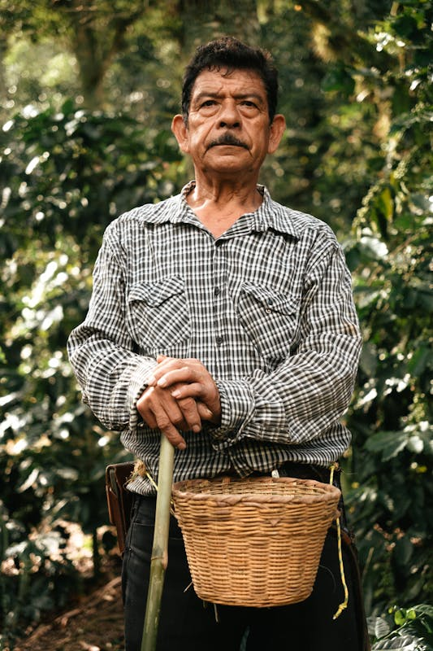

STORY
ストーリー
一杯のコーヒーに、誠実であるために。

01
原点は、一杯の失望だった
BEGINNING2018年、創業者の橋本慎一はエチオピアの農園を訪れた。 現地で飲んだコーヒーのあまりの豊かさに驚き、そして日本に帰国して同じ豆を頼んだときの落胆に愕然とした。 輸送・焙煎・保存——どこかで豆の可能性が失われていた。 「これを正すことが、自分の仕事だ」と感じたのが WP COFFEE の原点です。
「豆は、正直に扱えば正直に応えてくれる。
私たちにできることは、その誠実さを守り続けることだけです。」

02
産地との長期的な関係
TODAY現在 WP COFFEE は、エチオピア・コロンビア・グアテマラ・ケニアの4カ国8農園と直接取引を行っています。 年に一度は必ず現地を訪問し、農家と共にその年の豆の状態を確認します。 数字だけでなく、人との信頼関係の上に成り立つコーヒーを目指して。
VISION
私たちが目指すもの
コーヒーを通じて、生産者と消費者が直接つながれる世界をつくる。
スペシャルティコーヒーは、単なる飲み物ではありません。 農家の生活、土地の環境、そして丁寧な仕事——そのすべてが一杯に凝縮されています。 WP COFFEE は、その価値を正しく伝え、適正な対価が生産者に届く仕組みを作り続けます。
お客様には、コーヒーの背景を知りながら飲んでいただきたい。 そのために、すべての豆の産地・農家・精製方法を公開し、 バリスタが丁寧にご説明できる環境を整えています。